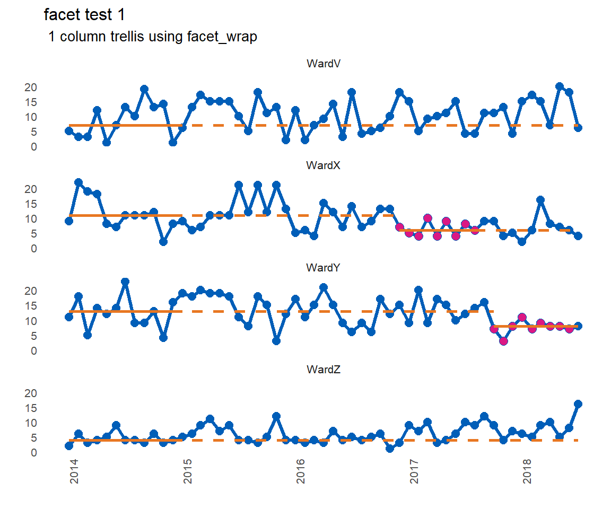
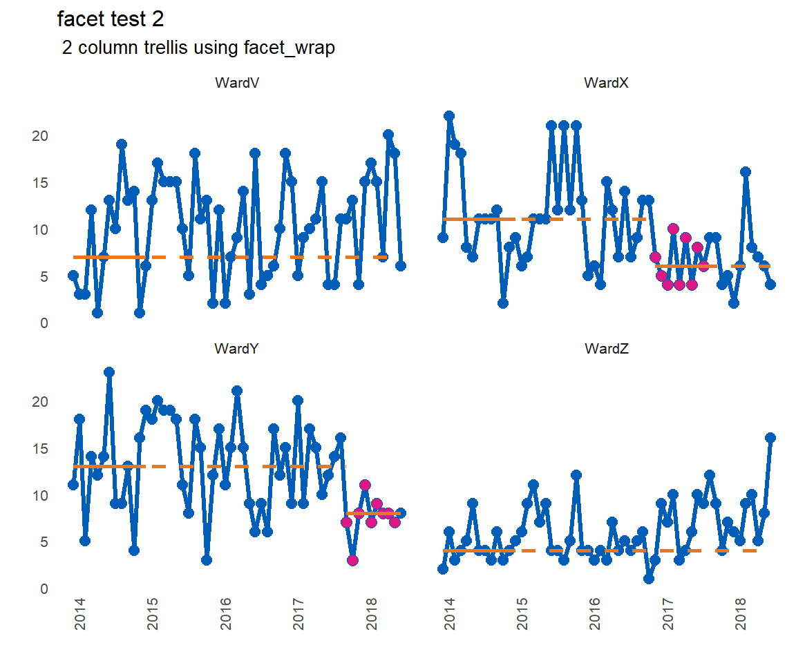
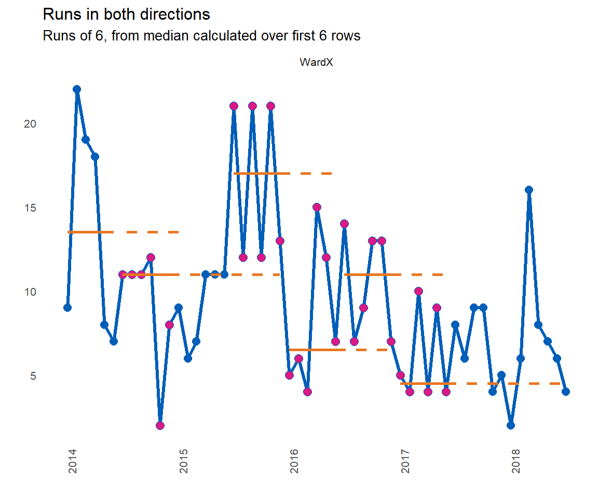

The rationale for the package is to analyse multiple run charts at once. More importantly, the package will identify a run of n successive points on the desired side of the median line, and will recalculate / rebase the median accordingly. Each time a run occurs, the median will be rebased. This helps to track improvements over time.
The default is to plot a faceted plot, allowing ggplot2 to handle the axis limits. You can specify the number of columns in the faceted plot, or let ggplot2 do its thing.
Here are the function arguments and defaults. A default run of 9 is specified as that is the length of run used by the IHI for its patient safety initiatives worldwide.
library(runcharter)
runcharter(df = signals,
med_rows = 13,
runlength = 9,
line_colr = "#005EB8",
point_colr ="#005EB8",
median_colr = "#E87722",
sus_fill = "#DB1884",
chart_title = NULL,
chart_subtitle = NULL,
direction = "below",
facet_cols = NULL,
save_plot = FALSE,
plot_extension = "png")library(runcharter)
runcharter(signals, direction = "below",
chart_title = "facet test 1",
chart_subtitle = " 1 column trellis using facet_wrap",
facet_cols = 1)
#> $runchart
#>
#> $median_rows
#> # A tibble: 52 x 4
#> grp y date baseline
#> <chr> <int> <date> <int>
#> 1 WardX 9 2014-01-01 11
#> 2 WardX 22 2014-02-01 11
#> 3 WardX 19 2014-03-01 11
#> 4 WardX 18 2014-04-01 11
#> 5 WardX 8 2014-05-01 11
#> 6 WardX 7 2014-06-01 11
#> 7 WardX 11 2014-07-01 11
#> 8 WardX 11 2014-08-01 11
#> 9 WardX 11 2014-09-01 11
#> 10 WardX 12 2014-10-01 11
#> # ... with 42 more rows
#>
#> $sustained
#> # A tibble: 18 x 8
#> grp y date rungroup improve startdate enddate lastdate
#> <chr> <int> <date> <dbl> <int> <date> <date> <date>
#> 1 WardX 7 2016-12-01 1 6 2016-12-01 2017-08-01 2017-08-01
#> 2 WardX 5 2017-01-01 1 6 2016-12-01 2017-08-01 2017-08-01
#> 3 WardX 4 2017-02-01 1 6 2016-12-01 2017-08-01 2017-08-01
#> 4 WardX 10 2017-03-01 1 6 2016-12-01 2017-08-01 2017-08-01
#> 5 WardX 4 2017-04-01 1 6 2016-12-01 2017-08-01 2017-08-01
#> 6 WardX 9 2017-05-01 1 6 2016-12-01 2017-08-01 2017-08-01
#> 7 WardX 4 2017-06-01 1 6 2016-12-01 2017-08-01 2017-08-01
#> 8 WardX 8 2017-07-01 1 6 2016-12-01 2017-08-01 2017-08-01
#> 9 WardX 6 2017-08-01 1 6 2016-12-01 2017-08-01 2017-08-01
#> 10 WardY 7 2017-10-01 1 8 2017-10-01 2018-06-01 2018-06-01
#> 11 WardY 3 2017-11-01 1 8 2017-10-01 2018-06-01 2018-06-01
#> 12 WardY 8 2017-12-01 1 8 2017-10-01 2018-06-01 2018-06-01
#> 13 WardY 11 2018-01-01 1 8 2017-10-01 2018-06-01 2018-06-01
#> 14 WardY 7 2018-02-01 1 8 2017-10-01 2018-06-01 2018-06-01
#> 15 WardY 9 2018-03-01 1 8 2017-10-01 2018-06-01 2018-06-01
#> 16 WardY 8 2018-04-01 1 8 2017-10-01 2018-06-01 2018-06-01
#> 17 WardY 8 2018-05-01 1 8 2017-10-01 2018-06-01 2018-06-01
#> 18 WardY 7 2018-06-01 1 8 2017-10-01 2018-06-01 2018-06-01
#>
#> $StartBaseline
#> [1] 11 13 4 7
library(runcharter)
runcharter(signals,
direction = "below",
chart_title = "facet test 2",
chart_subtitle = " 2 column trellis using facet_wrap",
facet_cols = 2)
#> $runchart
#>
#> $median_rows
#> # A tibble: 52 x 4
#> grp y date baseline
#> <chr> <int> <date> <int>
#> 1 WardX 9 2014-01-01 11
#> 2 WardX 22 2014-02-01 11
#> 3 WardX 19 2014-03-01 11
#> 4 WardX 18 2014-04-01 11
#> 5 WardX 8 2014-05-01 11
#> 6 WardX 7 2014-06-01 11
#> 7 WardX 11 2014-07-01 11
#> 8 WardX 11 2014-08-01 11
#> 9 WardX 11 2014-09-01 11
#> 10 WardX 12 2014-10-01 11
#> # ... with 42 more rows
#>
#> $sustained
#> # A tibble: 18 x 8
#> grp y date rungroup improve startdate enddate lastdate
#> <chr> <int> <date> <dbl> <int> <date> <date> <date>
#> 1 WardX 7 2016-12-01 1 6 2016-12-01 2017-08-01 2017-08-01
#> 2 WardX 5 2017-01-01 1 6 2016-12-01 2017-08-01 2017-08-01
#> 3 WardX 4 2017-02-01 1 6 2016-12-01 2017-08-01 2017-08-01
#> 4 WardX 10 2017-03-01 1 6 2016-12-01 2017-08-01 2017-08-01
#> 5 WardX 4 2017-04-01 1 6 2016-12-01 2017-08-01 2017-08-01
#> 6 WardX 9 2017-05-01 1 6 2016-12-01 2017-08-01 2017-08-01
#> 7 WardX 4 2017-06-01 1 6 2016-12-01 2017-08-01 2017-08-01
#> 8 WardX 8 2017-07-01 1 6 2016-12-01 2017-08-01 2017-08-01
#> 9 WardX 6 2017-08-01 1 6 2016-12-01 2017-08-01 2017-08-01
#> 10 WardY 7 2017-10-01 1 8 2017-10-01 2018-06-01 2018-06-01
#> 11 WardY 3 2017-11-01 1 8 2017-10-01 2018-06-01 2018-06-01
#> 12 WardY 8 2017-12-01 1 8 2017-10-01 2018-06-01 2018-06-01
#> 13 WardY 11 2018-01-01 1 8 2017-10-01 2018-06-01 2018-06-01
#> 14 WardY 7 2018-02-01 1 8 2017-10-01 2018-06-01 2018-06-01
#> 15 WardY 9 2018-03-01 1 8 2017-10-01 2018-06-01 2018-06-01
#> 16 WardY 8 2018-04-01 1 8 2017-10-01 2018-06-01 2018-06-01
#> 17 WardY 8 2018-05-01 1 8 2017-10-01 2018-06-01 2018-06-01
#> 18 WardY 7 2018-06-01 1 8 2017-10-01 2018-06-01 2018-06-01
#>
#> $StartBaseline
#> [1] 11 13 4 7Finding runs in both directions is now implemented:
library(runcharter)
library(dplyr)
#> Warning: package 'dplyr' was built under R version 3.5.2
#>
#> Attaching package: 'dplyr'
#> The following objects are masked from 'package:stats':
#>
#> filter, lag
#> The following objects are masked from 'package:base':
#>
#> intersect, setdiff, setequal, union
signals %>%
filter(grp == "WardX") %>%
runcharter(med_rows = 6,
runlength = 6,
direction = "both",
chart_title = "Runs in both directions",
chart_subtitle = "Runs of 6, from median calculated over first 6 rows")
#> $runchart
#>
#> $median_rows
#> # A tibble: 6 x 4
#> grp y date baseline
#> <chr> <int> <date> <dbl>
#> 1 WardX 9 2014-01-01 13.5
#> 2 WardX 22 2014-02-01 13.5
#> 3 WardX 19 2014-03-01 13.5
#> 4 WardX 18 2014-04-01 13.5
#> 5 WardX 8 2014-05-01 13.5
#> 6 WardX 7 2014-06-01 13.5
#>
#> $sustained
#> # A tibble: 30 x 8
#> grp y date rungroup improve startdate enddate lastdate
#> <chr> <int> <date> <dbl> <dbl> <date> <date> <date>
#> 1 WardX 11 2014-07-01 1 11 2014-07-01 2014-12-01 2017-06-01
#> 2 WardX 11 2014-08-01 1 11 2014-07-01 2014-12-01 2017-06-01
#> 3 WardX 11 2014-09-01 1 11 2014-07-01 2014-12-01 2017-06-01
#> 4 WardX 12 2014-10-01 1 11 2014-07-01 2014-12-01 2017-06-01
#> 5 WardX 2 2014-11-01 1 11 2014-07-01 2014-12-01 2017-06-01
#> 6 WardX 8 2014-12-01 1 11 2014-07-01 2014-12-01 2017-06-01
#> 7 WardX 21 2015-07-01 2 17 2015-07-01 2015-12-01 2017-06-01
#> 8 WardX 12 2015-08-01 2 17 2015-07-01 2015-12-01 2017-06-01
#> 9 WardX 21 2015-09-01 2 17 2015-07-01 2015-12-01 2017-06-01
#> 10 WardX 12 2015-10-01 2 17 2015-07-01 2015-12-01 2017-06-01
#> # ... with 20 more rows
#>
#> $StartBaseline
#> [1] 13.5This package makes no attempt to identify or highlight ‘trends’ (consecutively increasing or decreasing points) or shorter ‘shifts’ of runs below the median. In 8 years of working with QI data, I very rarely see trends, and when they do appear, they tend to result after a period of process degradation, when the process begins to return back to its natural median state.
In addition, research by qicharts2 author Jacob Anheoj shows that the trend rule is not reliable. There are no plans to add tests to identify trends to the package functionality.
If you want to apply the rules for trend , in addition to rebasing run charts, then you should consider using the runchart package by Joseph Adams.
Th package now allows for finding runs in both directions (above and below the median). Generally, for improvement purposes, you would only need to identify runs in one direction at a time. In other words, if you are trying to reduce adverse events, improvement will be evidenced with a run below the median. Therefore, you would not rebase the median if a run of points above the median was observed.
However, for longer term monitoring, it may be necessary to identify and ‘reset’ a median if a sustained deterioration in performance occurs. Ideally, you should move to using SPC charts for monitoring purposes.
“But [insert QI expert name here] says you should not automatically rebase the median unless you know the signal is genuine”.
Yes, and no.
Truth is, sometimes, there is too much information being collected, or the task of manually performing this analysis is very time consuming, especially if you have to make manual adjustments to spreadsheets / databases / graphical outputs, to deadlines, whilst battling traditional BI tools that were only ever designed for bar and pie charts. Ultimately, I built this for me, to make my job easier. I believe other healthcare analysts, who work with QI data, will also find it beneficial.
Obviously, there is no guarantee that any run that is identified is a genuine improvement. The user needs to verify this, however, the package aims to save time in identifying these signals in the first place.
You can use the package to identify potential runs, and if necessary, modify the outputs (e.g. the sustained dataframe) to remove any false signals, and rebuild the plot manually.